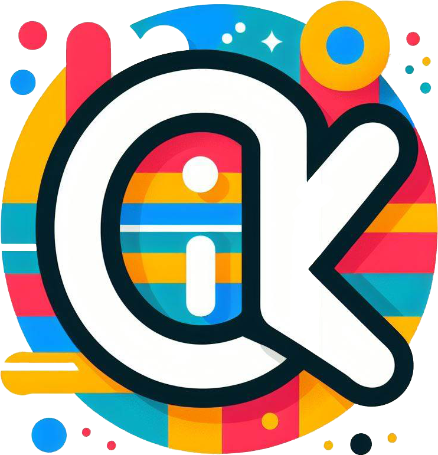

<footer>
  <p
    matTooltipPosition="above"
    [matTooltip]="
      !(isApiConnected$ | async)
        ? 'Unable to contact, connection to the API failed.'
        : ''
    "
  >
    <button
      mat-button
      (click)="openContactBottomSheet()"
      [disabled]="!(isApiConnected$ | async)"
    >
      <div class="btn_content">
        
        <div id="txt">Contact</div>
      </div>
    </button>
  </p>

  <p>&copy; 2024 Kevin O'Keeffe. All rights reserved.</p>
</footer>
